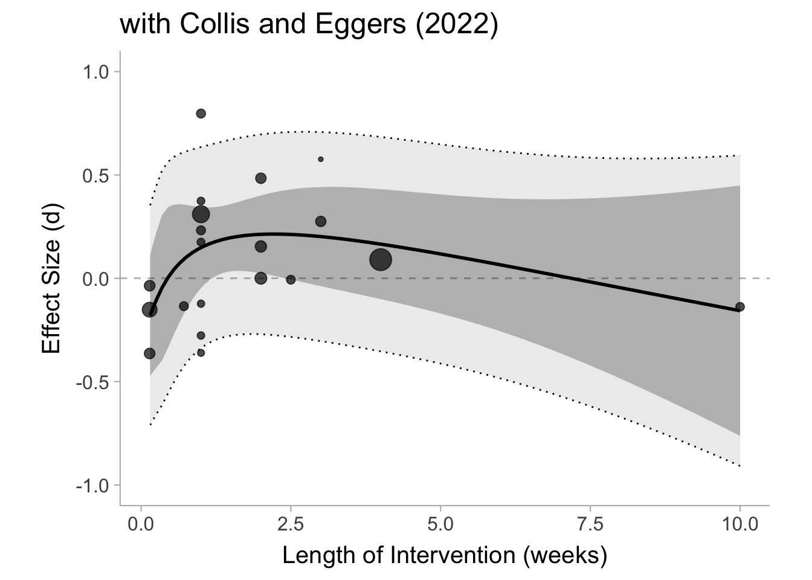
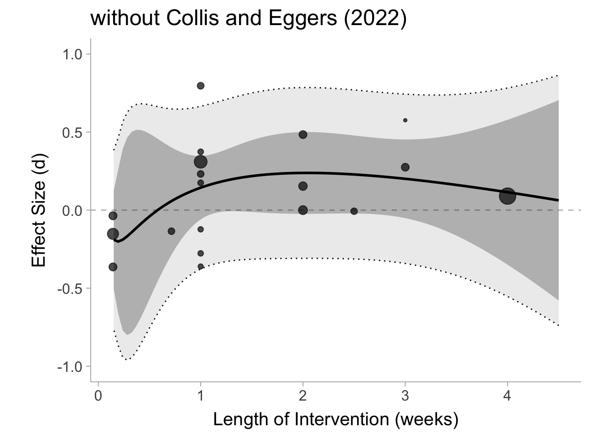
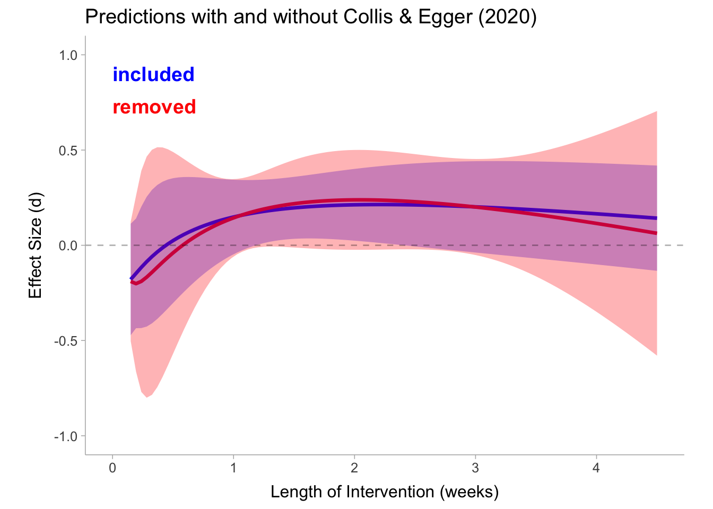

I want to thank Jonathan Haidt and Zach Rausch for engaging with my critique of their re-analysis of Ferguson’s meta-analysis. Unfortunately, their response continued to convey a misunderstanding of meta-analysis. There however were some valid points brought up that could have enhanced my analyses so I will also include those here. Before digging into this post, please first read my initial critique. I also address some accusations about my motivation here.
Author
Matthew B. Jané
Published
September 2, 2024
Establishing my motivation
Although my original post made it seem that I have some prior opinion that social media effects mental health. In reality, I actually think that social media probably does have an average negative effect on mental health. I also probably agree that the RCTs in this meta-analysis probably won’t find any convincing causal estimates. If Rausch and Haidt’s (R&H) made the argument that there is a causal effect, but the RCTs won’t capture then I would have never made my original post. What I know is meta-analysis, not the literature on social media use and mental health. I was motivated to write the original post because of the clear statistical malpractice employed in R&H’s re-analysis. I have no desire to prove or disprove whether social media is actually detrimental to mental health, but I do have a desire to combat the spread of misleading analyses and poor statistical practice.
Also, to those absurd comments and emails out there saying that I am somehow working for big Pharma, social media companies, the government, or profiting on some misinformation campaign: I am literally a graduate student who lives with my parents to save money on rent (you can help me out by buying me a coffee). I do this because I truly believe in the fight for a rigorous, open, and transparent science. I have been very critical of how academia operates and I hope to make some positive change to that end. Anyways, on to the post…
Where could I have been better?
The best criticisms of my blog outside of R&H’s criticisms seemed to have been that length weeks should have been log scaled (pulling in that 10 week intervention) and also I should have fit some non-linear model. I think these are completely valid points and I will conduct that analysis in this blog post.
R&H responded to one of my last analyses in the post (regressing the effect size on length of intervention) and said the following:
a blog post by Matthew Jané used Ferguson’s numbers and concluded that there is no relationship between the duration of reduction and the effect size.
This is all true (with the slight quibble that I said “little/no” relationship) and I should have been clearer about the assumptions underlying my claim. In my original post I said this:
Okay so as it turns out there appears to be little/no effect of the length of the intervention on the effect size.
I really should have said this:
Given the proposed model and the data, there appears to be little/no effect of the length of the intervention on the effect size.
Usually that does not need to be said considering the model was defined, but it is important nonetheless, since if I were to choose a different model it is possible we could have see a relationship between the two variables.
In Response to the Community Note on Haidt’s Tweet
A community note (that I did not write) was attached to Haidt’s tweet containing the R&H re-analysis. It has since disappeared, but here was the content of the note:
As many statistics experts have pointed out, this analysis is incorrect. If done correctly, the analysis shows that reducing social media has no effect. *then it links to my blog post as a source*
Although the first sentence I believe is accurate, the second sentence is not true and I did not state that in the original post. Therefore I am okay that the community note was taken down for whatever reason. Then promptly, a better and even more recent community note was posted that read,
The reanalysis doesn’t use an appropriate statistical model. It simply calculates an unweighted average across different studies, doesn’t provide confidence intervals, and misinterprets the evidence
All these points are unequivocally true. However, Haidt then posted the following tweet,
This tweet seemed to get his followers to rate the community note as unhelpful and thus it was taken down again. Of course, it is difficult to maintain a community note with Haidt’s large following. So I guess we will have to treat these blog posts as a much more detailed community note.
R&H’s analysis was unequivocally a meta-analysis
In a tweet by Haidt, he pointed out that R&H’s re-analysis should not be considered a meta-analysis:
I think it was a mistake to treat our essay as a meta-analysis
The reason I treated R&H’s re-analysis as a meta-analysis is because it is, by definition, a meta-analysis. Let me be clear, R&H’s analysis consisted of 1) averaging results across studies and 2) counting up positive, negative, and null effects, both of which are just different obsolete and unacceptable methods of meta-analysis (the latter is commonly referred to as a vote-counting meta-analysis). If you are unconvinced, here is the definition of a meta-analysis from the Cochrane handbook:
Meta-analysis is the statistical combination of results from two or more separate studies.
If you simply calculate an average effect size across studies, you have conducted a meta-analysis. If you tally up the number of positive and negative results, you have conducted a meta-analysis. Every table in R&H’s article is literally displaying a meta-analysis, whether that was their intent or not.
On top of all of the fundamental flaws in their analysis, R&H also based the following claim on their meta-analytic results:
These results clearly indicate that multi-week social media reduction experiments improve some aspects of well-being
Their results absolutely do not clearly indicate this. This is an extremely misleading conclusion that is based on a completely inappropriate analysis.
I recommend that R&H remove the tables with meta-analytic results and all the conclusions/claims associated with those results. Adding a postscript, a preface, and changing the title does not fix this.
Errors in Effect Sizes and Sample Sizes
Haidt also claims that there are errors in the effect sizes and sample sizes in Ferguson (2024)’s meta-analysis:
Our post was about how there are so many errors in the Ferguson meta, including errors in sample sizes and effect sizes, that we can’t yet do weighting or confidence intervals.
Yet R&H still conduct their re-analysis on those effect sizes. If the data is untrustworthy why conduct any analysis in the first place? Why is it more justifiable to compute unweighted average effects without any indicator of variability from that data base? If they believe that the data is untrustworthy, why conduct the analysis at all? If we decide to conduct an analysis, we must do it using the appropriate statistical techniques. Like I said previously, if R&H retracted their re-analysis and instead argued that these RCTs do not properly capture the causal effects of social media on mental health, I would probably agree with them.
I do not have the time to double check all the effect sizes of Ferguson’s meta-analysis. I analyzed them at face value which is exactly what R&H did in their re-analyses.
Haidt’s future meta-analysis
Haidt has proposed that he is planning to conduct a re-do of the Ferguson (2024)’s meta-analysis
Nonetheless, all of this is to show why we are not trying to do our own meta analysis with Ferguson’s data. In a future post we plan to do a review of the evidence from scratch so that we avoid these many problems. (It’s worth noting that we have also found five additional multi-week reduction studies, all of which find benefits to reduction, which are not in Ferguson’s meta).
To Jonathan Haidt: I would love to offer my help as a collaborator/consultant for this upcoming project so that we can establish a systematic, transparent, reproducible, and rigorous review, and meta-analysis plan. I also know many awesome and knowledgeable meta-analysts that I would be happy to recommend to you. You can email me at matthew.jane@uconn.edu
Constructing a systematic, rigorous, transparent, and fully reproducible meta-analysis is not only difficult, it is also exceedingly rare.
Controversy surrounding the study by Collis and Egger (2022)
R&H’s primary critique of my analysis was that Collis and Egger’s (2022) study shouldn’t be included because the manipulation check failed. From my reading of the paper, the treatment group did demonstrate lower screen time for facebook, instagram, and snapchat, however higher for instant messaging apps, news/media, gaming, as well as overall screen time. R&H mention WhatsApp as one of the primary apps that people replaced social media with. It does not seem that people really consider instant messaging like WhatsApp a form of social media (see poll results below):
It does not seem clear to me that this is a failed manipulation check, especially considering total digital screen time is not the target intervention variable. R&H also mention there is no evidence that other social media apps were used:
In addition, there is no evidence that participants reduced their use of other social media platforms such as TikTok, YouTube, Twitter, and Reddit (all of which were widely used by college students in 2019).
However that is true for a lot of the other studies in this meta-analysis where screen time wasn’t even monitored or monitored with self-report rather than more objective measures. I do not think we should punish one study for being transparent and providing a manipulation check.
Although I am against the exclusion of Collis and Eggers (2022) in principle, I will nevertheless fit the regression model with and without it.
Setting up the code
In this section we are just going to run the code we went over in the last blog post (see here)
# load in packageslibrary(mgcv)library(splines)library(osfr)library(tidyverse)library(metafor)library(readxl)library(psychmeta)# download data from OSF reporead_xlsx("~/Documents/MatthewBJane/blog-posts/Best Practices Coding Experiments.xlsx")
# A tibble: 35 × 16
Citation block n d Standardized Outcome…¹ `Validated Outcomes`
<chr> <lgl> <dbl> <dbl> <dbl> <dbl>
1 Alcott 2020 NA 1661 0.09 1 1
2 Brailovskaia … NA 286 0.154 1 1
3 Brailovskaia … NA 322 0 1 1
4 Collins and E… NA 121 -0.138 1 1
5 Deters & Mehl… NA 86 -0.207 1 1
6 Faulhaber et … NA 230 0.484 1 1
7 Gajdics 2022 NA 235 -0.364 1 1
8 Hall et al. 2… NA 130 -0.007 1 1
9 Hunt 2018 NA 143 0.232 1 1
10 Hunt 2021 NA 88 0.374 1 1
# ℹ 25 more rows
# ℹ abbreviated name: ¹`Standardized Outcomes`
# ℹ 10 more variables: `Matched Control Condition` <dbl>,
# `Distractor Questionnaires` <dbl>, `Query hypothesis guessing` <dbl>,
# Preregistration <dbl>, Age <dbl>, Year <dbl>, `Best Practices Total` <dbl>,
# `Verified 1= yes, 2=no` <dbl>, `Ratio at post` <dbl>,
# `Citation Bias 1=yes, 2 = no` <dbl>
# load in dataset and filter out studies without datadat <-read_excel("Best Practices Coding Experiments.xlsx",sheet =1) %>%filter(!is.na(d))# display effect size data for first 6 studieshead(dat[c("Citation","n","d")])
# A tibble: 6 × 3
Citation n d
<chr> <dbl> <dbl>
1 Alcott 2020 1661 0.09
2 Brailovskaia 2020 286 0.154
3 Brailovskaia 2022 322 0
4 Collins and Edgers 2022 121 -0.138
5 Deters & Mehl 2013 86 -0.207
6 Faulhaber et al., 2023 230 0.484
Non-linear model with and without Collis & Eggers (2022)
In my blog post, I regressed the effect size on length of the intervention using a linear meta-regression which estimates the conditional mean effect size with a straight line. I have had a number of people request that weeks should be logged (which will pull in that Collis and Egger study) and fit a non-linear basis spline to the effects. I totally agree with this approach. Essentially we are modeling the conditional mean of the effect size as a non-linear function of the length of weeks. This will help account for the withdrawal effect that R&H had mentioned.
Let’s first fit the model with the Collis and Egger (2022) included in the data:
nu =3# model with basis spline over log(weeks)mdl_weeks <-rma(d ~bs(log(length_weeks), df = nu),vi = v,data = dat,method ="REML",test ="knha")
Warning: 7 studies with NAs omitted from model fitting.
The output of the model will be difficult to interpret so we will go ahead and plot it out with the confidence and prediction intervals.
Warning: Removed 7 rows containing missing values or values outside the scale range
(`geom_point()`).

As we kind of would have expected, you see an initial increase in the conditional mean and then a slow fall over time. Still there is a lot of variability both in the true effects (prediction interval) and in the conditional mean effect (confidence interval) so it is difficult to say anything here with much confidence. Now we can construct the same model with Collis and Eggers (2022) removed from the analysis.
dat_no_CollisEggers <- dat %>%filter(Citation !="Collins and Edgers 2022")nu =3mdl_weeks <-rma(d ~bs(log(length_weeks), df = nu),vi = v,data = dat_no_CollisEggers,method ="REML",test ="knha")
Warning: 7 studies with NAs omitted from model fitting.
Like we did for the last one, we can plot out the same model without the Collis and Egger (2022) study:

Surprisingly, even without Collis and Egger’s study there really isn’t a whole lot we can say here with confidence. It does not really even appear is much different than it is with Collis and Eggers (2022) study included. In fact, with the predictions (conditional means) plotted side by side they appear almost identical:

Model predictions (conditional mean of true effects) and confidence intervals for the model including Collis & Egger and the model without.
A note on effect dependency
The confidence and prediction intervals are probably narrower then what it should be since some of the studies clearly come from the same lab and have similar designs. These CIs are likely the best case scenario.
Changing the two week cut-point of R&H’s
Brenton Wiernik suggested that I play around with the two week cut-point that R&H used in their article. I understand R&H had the following justification for their cut-point,
Acute withdrawal symptoms typically peak after a few days, but often last for up to two weeks.
Therefore R&H selected for reduction studies that were two weeks or longer. But if withdrawal symptoms last for two weeks in many cases, then maybe we should play it safe and only select the studies that are longer than two weeks (\(X_\mathrm{weeks}>2\) rather than \(X_\mathrm{weeks}\geq 2\)). This cut-point could have easily been argued with R&H’s reasoning.
pred se ci.lb ci.ub pi.lb pi.ub
0.0980 0.0514 -0.0448 0.2408 -0.0448 0.2408
After playing it safe and allowing for withdrawal symptoms to subside we see a mean effect of \(\hat{\mu}_\delta = .098\, [-.045,\, .241]\). Well seems that the average effect is quite small and about half the size of R&H’s average, but maybe we can try only studies that were more than 3 weeks,
pred se ci.lb ci.ub pi.lb pi.ub
0.0446 0.0910 -1.1122 1.2015 -1.5739 1.6631
We see the mean effect of \(\hat{\mu}_\delta = .045\, [-1.112, \, 1.202]\) is even smaller with very extremely wide CIs.
This goes to show that arbitrary post-hoc analytic decisions can greatly impact the end result. This is just another reason why R&H’s analysis was, at the very least, highly misleading.
Discussion
Ultimately, after re-running the model with a more sophisticated non-linear regression with and without the Collis & Egger study that Haidt suggested, there not great evidence of sustained detrimental effects in these RCTs. This does not mean social media is not, on average, detrimental for mental health, it just means that these these RCTs do not appear be good evidence of that fact.
If I did anything incorrectly or if I did not use best practices, I take full responsibility and you can let me know by sending me a DM on twitter or emailing me at matthewbjane@gmail.com.
Dahlke, Jeffrey A., and Brenton M. Wiernik. 2019. “psychmeta: An r Package for Psychometric Meta-Analysis.”Applied Psychological Measurement 43 (5): 415–16. https://doi.org/10.1177/0146621618795933.
Ferguson, Christopher J. 2024. “Do Social Media Experiments Prove a Link with Mental Health: A Methodological and Meta-Analytic Review.”Psychology of Popular Media, No Pagination Specified–. https://doi.org/10.1037/ppm0000541.
R Core Team. 2024. R: A Language and Environment for Statistical Computing. Vienna, Austria: R Foundation for Statistical Computing. https://www.R-project.org/.
Viechtbauer, Wolfgang. 2010. “Conducting Meta-Analyses in R with the metafor Package.”Journal of Statistical Software 36 (3): 1–48. https://doi.org/10.18637/jss.v036.i03.
Wickham, Hadley, Mara Averick, Jennifer Bryan, Winston Chang, Lucy D’Agostino McGowan, Romain François, Garrett Grolemund, et al. 2019. “Welcome to the tidyverse.”Journal of Open Source Software 4 (43): 1686. https://doi.org/10.21105/joss.01686.
Wolen, Aaron R., Chris H. J. Hartgerink, Ryan Hafen, Brian G. Richards, Courtney K. Soderberg, and Timothy P. York. 2020. “osfr: An R Interface to the Open Science Framework.”Journal of Open Source Software 5 (46): 2071. https://doi.org/10.21105/joss.02071.
Wood, S. N., N., Pya, and B. S"afken. 2016. “Smoothing Parameter and Model Selection for General Smooth Models (with Discussion).”Journal of the American Statistical Association 111: 1548–75.